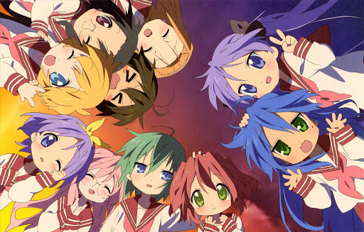

<DOCTYPE html>
<html lang = "ja">
<head>
<meta charset="utf-8">
<meta name=”viewport” content=”width=device-width,initial-scale=1.0″>
<title>らき☆すた</title>
<link rel="stylesheet" href="rakisuta.CSS">
<style>
body{
  padding: 60px;
  margin:  60px;
  background-image: url("3ec862b93a8e4d199b13b6d2d25f3470.jpg");
  background-repeat: no-repeat;
  background-attachment: fixed;
  background-size: cover;
}


</style>
</head>
<body>

<h1 align="center">あらすじ</h1> 
<br><h2  align="center"> 
<br>小柄でアニメやゲームが大好きな、オタクな女子高生（7巻より大学生）
<br>泉こなたと、その友人でゆったりした性格の柊つかさ、つかさの双子の姉で
<br>しっかり者でツッコミ役の柊かがみ、容姿端麗で博識ながら天然ボケな所が
<br>ある高良みゆきの4人を中心として、その周囲の人々も含めたまったりとした
普段の生活を描いている。
</body>

</html>